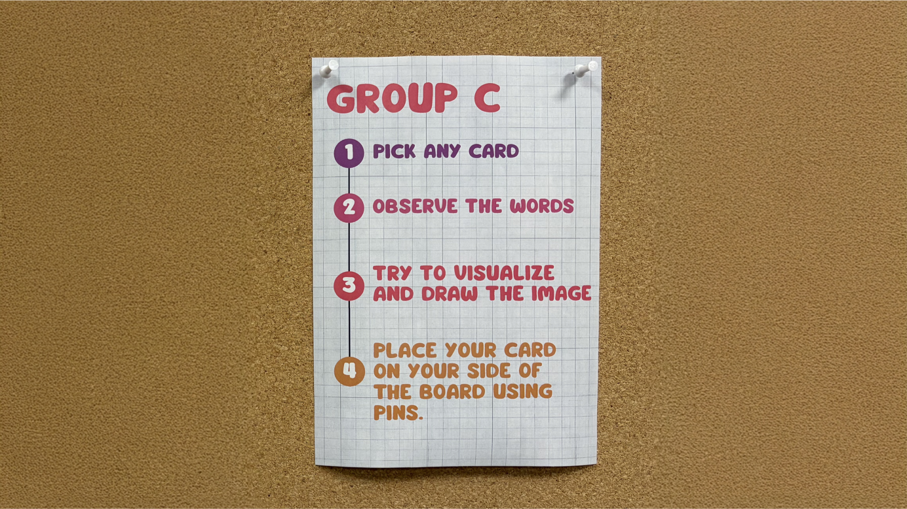

Setup
Initially the artwork is fully covered. Participants do not know what the image is. Instructions and response cards are placed on the table.


This project presents data in a participatory way. Users actively interpret structured information, form their own mental image, and then compare it with the revealed image.
Initially the artwork is fully covered. Participants do not know what the image is. Instructions and response cards are placed on the table.
The class is divided into two groups. Group A, the side that see the image will try to describe the image but only with words. Group B, the other side who see only words and will try to imagine the image and write a detail description of the image.

Now, The cover is removed. Participants view the artwork from their perspective, write responses, and pin them.

Even though the full data was not provided, key words and their arrangement helped participants visualize the image. The results show that most of Group B imagined something related to the ocean and a boat, with very similar interpretations.

The first artwork was relatively easy, as the words were very direct. Even the colors and visual approach guided the audience clearly toward the image. To increase complexity, the second version uses only a few direct words, while others are less exact. The colors are also kept similar, making interpretation more open.
For this stage, the instruction changes slightly. Participants now see only the words, visualize the image in their minds, and express it through doodling.

Surprisingly, even with less direct words and the added step of drawing, participants still remembered the key words. Despite the extra and less relevant words, they were able to almost perfectly guess the image.